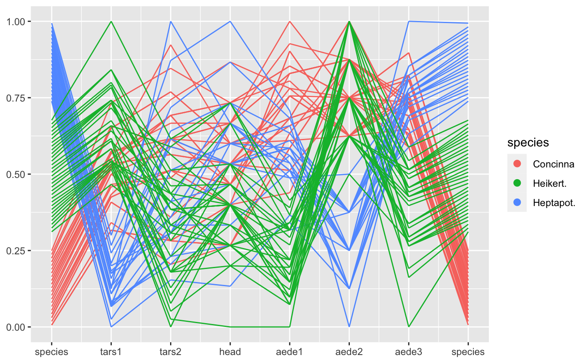

R package for creating parallel coordinate plots in the ggplot2 framework

ggpcp is currently only available in the development version from Github:
Using the functionality
Load the library
Load a dataset
library(tidyverse)
data(flea, package = "GGally")
flea %>%
gather_pcp(1:7) %>%
group_by(name) %>% # should go into transformation
mutate(value = (level-min(level))/(max(level)-min(level))) %>%
ggplot(aes(id = id, name = name, value = value, level = level, class = class)) +
geom_pcp(aes(colour=species)) 
flea %>%
mutate(species = factor(species, levels = c("Heptapot.", "Concinna", "Heikert."))) %>%
gather_pcp(1:7) %>%
group_by(name) %>% # should go into transformation
mutate(value = (level-min(level))/(max(level)-min(level))) %>%
ggplot(aes(id = id, name = name, value = value, level = level, class = class)) +
geom_pcp_box(boxwidth = 0.1, fill="grey50") +
geom_pcp(aes(colour=species), boxwidth = 0.1) 
ggpcp deals with categorical variables by using the space on the y axis of a categorical variable to spread points out evenly. This allows us to track individual points through the parallel coordinate plot even in the presence of categorical variables.
Another look at the Titanic Data
For categorical variables ggpcp presents a result similar to parsets by Kosara et al (2013).
titanic <- as.data.frame(Titanic)
titanic <- titanic %>%
purrr::map(.f = function(x) rep(x, titanic$Freq)) %>%
as.data.frame() %>% select(-Freq)
titanic %>%
gather_pcp(1:4) %>%
ggplot(aes(id = id, name = name, value = value, level = level, class = class)) +
geom_pcp(aes(colour = Survived), alpha = 0.01) +
scale_colour_manual(values=c("darkorange", "steelblue")) +
guides(colour=guide_legend(override.aes = list(alpha=1))) +
scale_x_continuous(breaks=1:4, labels=c(names(titanic)))